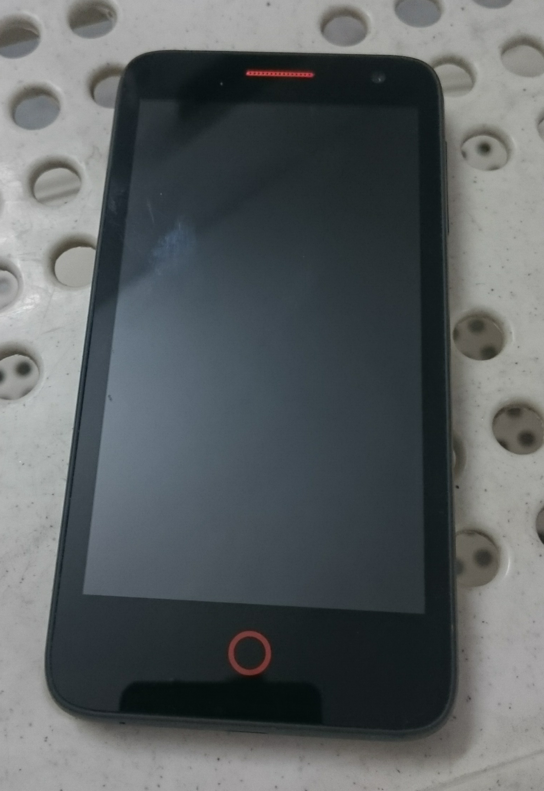

Mozilla Flame (t2m-flame)
Jump to navigation
Jump to search
| This device is still running on armhf, although the processor supports armv7. If you own it, change it and test it that way. |
|
 Mozilla Flame | |
| Manufacturer | Mozilla (Alcatel/t2m) |
|---|---|
| Name | Flame |
| Codename | t2m-flame |
| Released | 2014 |
| Category | testing |
| Original software | Firefox OS |
| Original version | Linux 3.0(?) |
| Hardware | |
| Chipset | Qualcomm Snapdragon 200 (MSM8610) |
| CPU | Dual-core 1.2 GHz Cortex-A7 |
| GPU | Adreno 302 |
| Display | 480x854 AMOLED |
| Storage | 8 GB |
| Memory | 1 GB |
| Architecture | armv7 |
| Type | handset |
{kind=link}
| USB Networking |
Works
|
|---|---|
| Flashing |
Works
|
| Touchscreen |
Works
|
| Display |
Works
|
| WiFi |
Partial
|
| FDE | |
| Mainline | |
| Battery | |
| 3D Acceleration | |
| Audio | |
| Bluetooth | |
| Camera | |
| GPS | |
| Mobile data | |
| SMS | |
| Calls | |
| USB OTG | |
| NFC | |
| Accelerometer | |
|---|---|
| Magnetometer | |
| Ambient Light | |
| Proximity | |
| Hall Effect | |
| Barometer | |
| Power Sensor | |
| Camera Flash | |
|---|---|
| Keyboard | |
| Touchpad | |
| USB-A | |
| HDMI/DP | |
| Ir TX | |
| Ir RX | |
| Stylus | |
| Haptics | |
| Ethernet | |
| FOSS bootloader | |
Contributors
- kskarthik
- MartijnBraam
- ata2001
- ollieparanoid
- dzervas
- lawl
- yuvadm
Users owning this device
- Arthurlutz
- Mossroy (Notes: sometimes used : it can not be flashed easily. Broken touchscreen with an unactive zone, and some hardware USB issues)
Installation
Build and install to SD card:
$ ./pmbootstrap.py install --sdcard /dev/mmcblkX
Boot the phone into fastboot mode (power + volume down) and flash the boot partition:
$ ./pmbootstrap.py flasher flash_kernel
Insert SD card and boot.
Modules / Firmware Support
Most modules and firmware while built and installed do not load correctly. Ongoing work is in progress to support:
- Touchscreen
- Wifi
- Audio
- etc.
Unknown chunk type
mozilla-flame.img cannot be flashed to either the system/userdata partitions due to bootloader limitations (probably because the system image is larger than the max download size and it forces the download into sparse mode, which is handled badly.)
$ fastboot flash userdata flame/mozilla-flame.img target reported max download size of 301989888 bytes erasing 'userdata'... OKAY [ 1.254s] sending sparse 'userdata' 1/2 (288781 KB)... OKAY [ 10.018s] writing 'userdata' 1/2... FAILED (remote: Unknown chunk type) finished. total time: 11.275s
Workaround is to install to SD card, or to init your build with none UI instead of weston, which will produce a system image under the limitation.
Internal Data
Taken off a clean v18D_nightly_v5.zip B2G base image
Partitions
shell@flame:/ $ df
Filesystem Size Used Free Blksize
/dev 451.7M 132.0K 451.6M 4096
/sys/fs/cgroup 451.7M 0.0K 451.7M 4096
/sys/fs/cgroup/memory: Permission denied
/mnt/asec 451.7M 0.0K 451.7M 4096
/mnt/obb 451.7M 0.0K 451.7M 4096
/system 412.5M 283.5M 129.0M 4096
/data 2.0G 40.4M 2.0G 4096
/cache 70.8M 4.1M 66.8M 4096
/persist 4.9M 4.0M 852.0K 4096
/firmware 64.0M 31.7M 32.2M 16384
/storage/sdcard 3.8G 8.0K 3.8G 4096
/mnt/media_rw/sdcard: Permission denied
shell@flame:/ $ cat /proc/partitions
major minor #blocks name
253 0 196608 zram0
179 0 7634944 mmcblk0
179 1 65536 mmcblk0p1
179 2 512 mmcblk0p2
179 3 128 mmcblk0p3
179 4 32 mmcblk0p4
179 5 512 mmcblk0p5
179 6 500 mmcblk0p6
179 7 15360 mmcblk0p7
179 8 500 mmcblk0p8
179 9 1024 mmcblk0p9
179 10 1536 mmcblk0p10
179 11 1536 mmcblk0p11
179 12 429580 mmcblk0p12
179 13 32768 mmcblk0p13
179 14 73728 mmcblk0p14
179 15 15360 mmcblk0p15
179 16 1024 mmcblk0p16
179 17 1536 mmcblk0p17
179 18 1 mmcblk0p18
179 19 8 mmcblk0p19
179 20 10240 mmcblk0p20
179 21 1024 mmcblk0p21
179 22 1024 mmcblk0p22
179 23 256 mmcblk0p23
179 24 10 mmcblk0p24
179 25 512 mmcblk0p25
179 26 500 mmcblk0p26
179 27 500 mmcblk0p27
179 28 204800 mmcblk0p28
179 29 2162688 mmcblk0p29
179 30 4095983 mmcblk0p30
179 32 512 mmcblk0rpmb
shell@flame:/ $ ls -la /dev/block/platform/msm_sdcc.1/by-name/
lrwxrwxrwx root root 1969-12-31 19:10 DDR -> /dev/block/mmcblk0p4
lrwxrwxrwx root root 1969-12-31 19:10 aboot -> /dev/block/mmcblk0p5
lrwxrwxrwx root root 1969-12-31 19:10 abootbk -> /dev/block/mmcblk0p25
lrwxrwxrwx root root 1969-12-31 19:10 boot -> /dev/block/mmcblk0p7
lrwxrwxrwx root root 1969-12-31 19:10 cache -> /dev/block/mmcblk0p14
lrwxrwxrwx root root 1969-12-31 19:10 custpack -> /dev/block/mmcblk0p28
lrwxrwxrwx root root 1969-12-31 19:10 fota -> /dev/block/mmcblk0p24
lrwxrwxrwx root root 1969-12-31 19:10 fsc -> /dev/block/mmcblk0p18
lrwxrwxrwx root root 1969-12-31 19:10 fsg -> /dev/block/mmcblk0p17
lrwxrwxrwx root root 1969-12-31 19:10 misc -> /dev/block/mmcblk0p16
lrwxrwxrwx root root 1969-12-31 19:10 modem -> /dev/block/mmcblk0p1
lrwxrwxrwx root root 1969-12-31 19:10 modemst1 -> /dev/block/mmcblk0p10
lrwxrwxrwx root root 1969-12-31 19:10 modemst2 -> /dev/block/mmcblk0p11
lrwxrwxrwx root root 1969-12-31 19:10 pad -> /dev/block/mmcblk0p9
lrwxrwxrwx root root 1969-12-31 19:10 persist -> /dev/block/mmcblk0p13
lrwxrwxrwx root root 1969-12-31 19:10 recovery -> /dev/block/mmcblk0p15
lrwxrwxrwx root root 1969-12-31 19:10 rpm -> /dev/block/mmcblk0p6
lrwxrwxrwx root root 1969-12-31 19:10 rpmbk -> /dev/block/mmcblk0p26
lrwxrwxrwx root root 1969-12-31 19:10 sbl1 -> /dev/block/mmcblk0p2
lrwxrwxrwx root root 1969-12-31 19:10 sdi -> /dev/block/mmcblk0p3
lrwxrwxrwx root root 1969-12-31 19:10 secro -> /dev/block/mmcblk0p23
lrwxrwxrwx root root 1969-12-31 19:10 splash -> /dev/block/mmcblk0p20
lrwxrwxrwx root root 1969-12-31 19:10 ssd -> /dev/block/mmcblk0p19
lrwxrwxrwx root root 1969-12-31 19:10 system -> /dev/block/mmcblk0p12
lrwxrwxrwx root root 1969-12-31 19:10 traceability -> /dev/block/mmcblk0p21
lrwxrwxrwx root root 1969-12-31 19:10 tuningpara -> /dev/block/mmcblk0p22
lrwxrwxrwx root root 1969-12-31 19:10 tz -> /dev/block/mmcblk0p8
lrwxrwxrwx root root 1969-12-31 19:10 tzbk -> /dev/block/mmcblk0p27
lrwxrwxrwx root root 1969-12-31 19:10 usbmsc -> /dev/block/mmcblk0p30
lrwxrwxrwx root root 1969-12-31 19:10 userdata -> /dev/block/mmcblk0p29
Links
- postmarketOS on Mozilla Flame blog post with installation instructions and screenshots of Plasma Mobile and Weston
- Kernel Source
- Bleeding edge
device/mozilla-flamebranch - UART/serial debug logs
- Serial debugging
- Mozilla Flame B2G build artifacts mirror
{kind=link}
{kind=link}